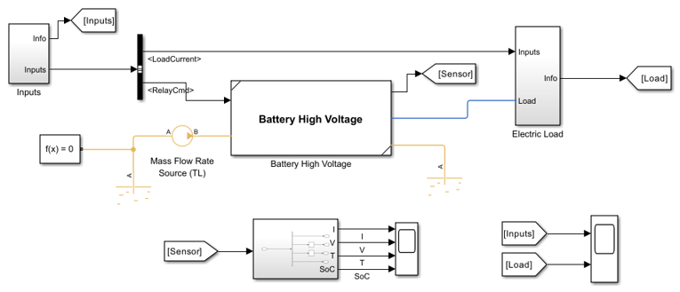
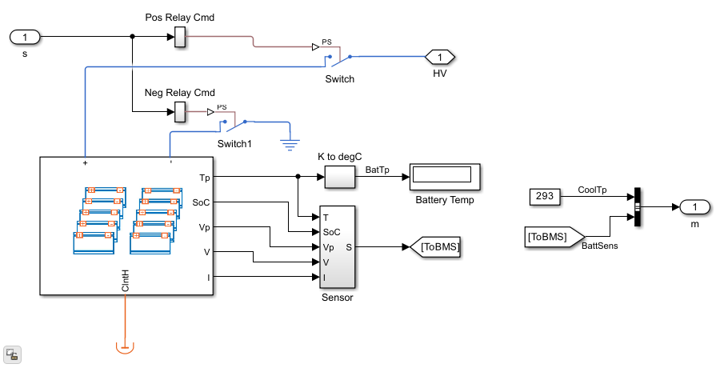

Size Battery Pack for Electric Vehicle
Workflow — Uses BatteryHV behavior to compare capacity, pack mass, and vehicle range.
Reusable high-voltage battery pack with electrical and electrothermal fidelities
Component path: Components / BatteryHV

High-voltage battery pack component for the BEV system model. This component represents the main energy storage device and provides electrical power to the drivetrain, HVAC, and auxiliary loads. Multiple fidelity levels are available to trade off simulation speed against thermal and electrical detail.
Use BatteryEq for early integration without relay control, BatteryLumped for fast electrical studies, BatteryLumpedThermal when one pack temperature is sufficient, and BatteryTableBased when SOC- and temperature-dependent electrical behavior must participate in the coolant loop. BatteryEq is not selectable in the shipped template configuration.
| Model | Description | Use case | Templates | Documentation & files |
|---|---|---|---|---|
| BatteryLumped | Lumped equivalent-circuit pack at fixed temperature. | Fast vehicle-level simulations where thermal dynamics are not required, such as quick range sweeps or controller tuning. | VehicleElectric, VehicleElecAux | Documentation · Parameters |
| BatteryEq | Simplified equivalent-circuit battery without relay logic; not selectable in the shipped configuration. | Rapid prototyping and early integration where relay control is not yet required. The input bus is terminated in this fidelity. | Not in shipped config | Parameters |
| BatteryLumpedThermal | Single thermal-mass node with a coolant port. | System-level studies where battery temperature response matters but detailed cell-level dynamics are not needed. | VehicleElectroThermal | Documentation · Parameters |
| BatteryTableBased | SOC/temperature lookup tables with coolant and heater coupling. | High-fidelity drive-cycle simulations, thermal management studies, and battery sizing where accurate electrical and thermal behavior is required. Default in the system model. | VehicleElectroThermal | Documentation · Parameters |
Workflow/Vehicle/RangeEstimation/) — Uses BatteryTableBased in the full electro-thermal vehicle model to estimate driving range under NEDC, WLTC, and EPA cycles.Workflow/Battery/BatterySizing/) — Sweeps cell capacity and vehicle mass to size the HV pack for a target range.Workflow/Battery/VirtualSensorNeuralNetModel/) — Trains a neural network to predict battery temperature from voltage and current measurements.
Workflow — Uses BatteryHV behavior to compare capacity, pack mass, and vehicle range.
Workflow — Uses the battery test bench and logged electrical/thermal signals.
Vehicle workflow — Uses BatteryHV with the shared motor-drive, driveline, and thermal components.
All fidelities share the high-voltage and output boundaries. The configured fidelities use relay commands from input bus s; BatteryEq currently terminates that input bus. Thermal-capable fidelities (BatteryLumpedThermal, BatteryTableBased) add the coolant port noted below.
| Port / signal | Direction | Description |
|---|---|---|
| Positive relay command | Input | Connects the battery positive terminal to the HV bus in configured fidelities; ignored by BatteryEq. |
| Negative relay command | Input | Connects the battery negative terminal to the HV bus in configured fidelities; ignored by BatteryEq. |
| Coolant port (thermal fidelities) | Conserving | Thermal-liquid interface for coolant-loop and heater heat exchange. |
| Voltage | Output | Pack terminal voltage. |
| Current | Output | Pack current. |
| SOC | Output | State of charge. |
| Temperature | Output | Estimated by BatteryEq, fixed or externally supplied by BatteryLumped, or computed from thermal dynamics by thermal fidelities. |
| Cell Voltage | Output | Individual cell voltage estimate. |
Verify component behavior under controlled electrical and thermal boundaries.
Run the maintained BatteryHV test case before integration.
Battery Management System | Battery Heater | Size Battery Pack